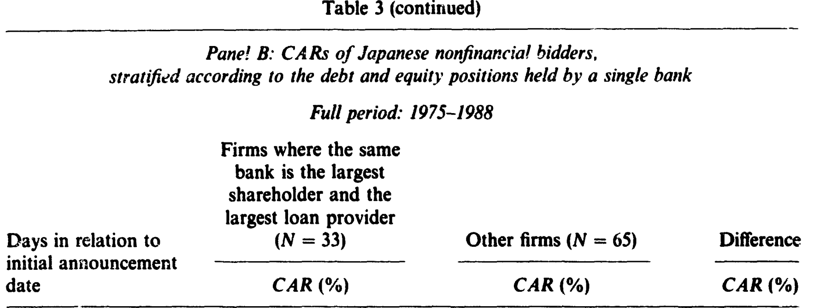
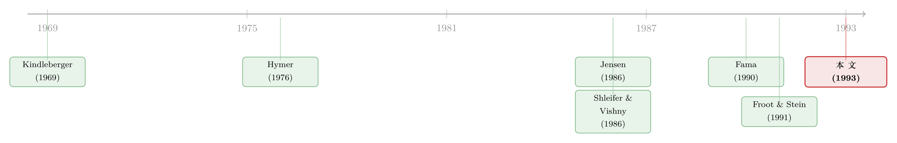

高负债的日本公司，反而买到了更好的美国资产
本文读的是 Kang (1993, Journal of Financial Economics)：1975–1988 年间，日本公司收购美国公司，给收购方和目标公司都创造了显著的财富。更耐人寻味的是横截面规律——越是负债高、跟银行借得多的日本收购方，宣告日的超额收益越高；同时，美元相对日元贬值得越多，收购方赚得越多。一句话，这篇论文把「债」和「汇率」放进了同一张解释表里。
1 引言：一个被「政治」盖住的金融问题
1980 年代后半段，日本的钱像潮水一样涌进美国。三菱地所买下洛克菲勒中心，索尼吞下哥伦比亚影业——「日本人正在买下美国」一时成了报纸头条。Kester (1991) 给了一个冷静的数字：1984 年，日本公司花了大约 $1.4 亿美元收购 39 家美国标的；到 1988 年，这个数字膨胀到 $12.6 亿美元、132 家标的。
但热闹归热闹，一个朴素的金融问题却始终没被认真回答：这些交易到底创没创造价值？如果创造了，是什么在驱动它？当时舆论吵的是「威胁论」，学界手里却几乎没有证据。这正是本文要补的那一块。
把「日本买美国」翻译成金融语言，它其实落在三条已有的理论脉络上：跨国直接投资（FDI）理论、公司控制权市场理论、以及汇率与资本市场不完美理论。本文的巧妙之处，是用日本企业独特的财务结构，让这三条线在同一个样本里相互印证。
2 真正的张力：负债怎么会是「好事」？
先抛出本文最反直觉的那个结论，再慢慢解释它为什么成立。
在标准的公司金融教科书里，高杠杆通常意味着风险、约束、甚至财务困境。可在这篇论文里，收购方的杠杆越高、向金融机构借得越多，它做的并购反而被市场打了越高的分。这是怎么回事？
答案藏在日本独特的「银行—企业」关系里。和受 格拉斯—斯蒂格尔法案（Glass-Steagall Act） 束缚、不能持有企业投票权股票的美国银行不同，日本的银行可以直接持有其他公司的股权。1987 年，日本的银行和保险公司合计持有东京证券交易所约 42.2% 的上市股份。按 Shleifer 和 Vishny (1986) 与 Jensen (1989) 的逻辑，如此集中的股权，给了金融机构强烈的动机去监督管理层。
更进一步，有些日本公司还有一家被称为 主银行（main bank）的商业银行，它既是大股东、又是大债主，同时提供短期和长期融资。它既持股又持债，于是有最强的动机去最大化公司价值——用本文的话说，主银行扮演的角色，很像美国的杠杆收购（LBO）合伙人。
于是两条经典假说在这里交汇：
- Jensen (1986) 的自由现金流假说——债务能压缩管理层挥霍自由现金流的空间（关于这条线，可参见《现金为什么一定要「还」出去？——四十年后，重读 Jensen 的自由现金流》）；
- Fama (1990) 的契约成本假说——银行贷款把「监督债权人与股东冲突」这件事大量委托给了银行。
把这两条合起来，本文得到一个可检验的预言：借得越多、跟金融机构绑得越紧的日本收购方，越不会乱花钱去做毁灭价值的收购——所以它的并购公告应该带来更高的超额收益。这就是那个「高负债反而是好事」的反转。
3 识别策略：一场跨越时区的事件研究
要验证上面的故事，论文用的是标准的 事件研究法（event study）。逻辑很直接：如果一桩并购创造（或毁灭）了价值，这个净现值会反映在宣告日前后的股价里。
第一步，估市场模型。用宣告日前第 220 到第 20 个交易日的窗口，对每只股票估出市场模型参数——日本公司以 PACAP 等权指数为基准，美国公司以 CRSP 等权指数为基准：
$$ R_{it} = \alpha_i + \beta_i R_{mt} + \varepsilon_{it} $$
第二步，算 累计异常收益（cumulative abnormal return, CAR）。从宣告日前 \(t_1\) 到宣告日后 \(t_2\)，把每天的异常收益加总：
$$ \text{CAR}_i(t_1, t_2) = \sum_{t=t_1}^{t_2} \big( R_{it} - \hat{\alpha}_i - \hat{\beta}_i R_{mt} \big) $$
这里有一个容易被忽略、却很要紧的技术细节：时区。日本的宣告日从《华尔街日报》认定（记为美国 day 0），而东京和纽约的交易时段从不重叠——东京对 day 0 消息的股价反应，要晚一个交易日才看得到。所以论文把日本的 day 0 定义为美国 day 0 的后一个交易日。这种对细节的较真，正是事件研究可信与否的分水岭。
第三步，也是衡量「总协同收益」的关键一步。沿用 Bradley、Desai 和 Kim (1988) 的做法，论文把目标与收购方拼成一个市值加权组合，用组合的 CAR 来度量整桩交易创造的总财富：
这一步之所以重要，是因为它把「财富在谁手里」和「财富有没有被创造出来」分开了：单看收购方收益，可能因为它把好处都让给了目标股东而显得平淡；唯有看市值加权的组合，才能看清整桩交易到底是把饼做大了，还是只是把钱从一只口袋挪到了另一只。
控制组怎么选？这是识别的另一半。每一个日本收购方，都被匹配一个在同期、做同类型交易（合并/要约收购/部分收购/收购业务单元）、同支付方式、同行业（至少 SIC 前两位）、且股权市值最接近的美国国内收购方。匹配行业，是因为石油、轮胎、烟草这类行业天然有更高的自由现金流；匹配年份，是因为 French 和 Poterba (1991) 指出，日本的杠杆率和银行贷款占比在过去十年里变化巨大。这样一来，日美收购方之间的差异，就不至于只是行业或年代的假象。
4 数据
- 样本：1975–1988 年间，119 家在东京证券交易所上市的日本收购方（其中 93 家非金融）与 102 家在 NYSE/AMEX/OTC 上市的美国目标公司；其中有 68 对非金融的「收购方—目标」配对同时有日度股价。
- 控制样本：119 家美国国内收购方 + 102 家美国目标公司。
- 数据来源：Foreign Acquisitions Roster、美国商务部的 FDI Completed Transactions、Dow Jones News Retrieval；宣告日取自《华尔街日报》；日本股价来自 PACAP，美国股价来自 CRSP；财务与持股数据来自 PACAP、Daiwa、Dodwell 等多个日本数据库与美国的
Compustat。 - 样本集中度：交易笔数的 46%、交易金额的 84% 都集中在 1986–1988 这三年——这个事实，后面会回来「咬」住所有结论。
样本的描述性统计本身就讲了半个故事（见表 2 的精神）：日本收购方的账面杠杆（债务/总资产）比美国同行高出约 30 个百分点（72.08% v. 56.26%）；金融机构贷款占公司市值的比重，日本是 20.24%，美国只有 5.42%；日本的银行和保险公司平均持有样本公司 48% 的股权，全部机构合计约 78%；P-E 比也高得惊人（47.94 v. 15.20 倍）。一句话：日本收购方就是「高杠杆 + 银行深度介入」的典型，这恰好是检验监督假说的理想土壤。
5 主要结果：收益、横截面、与那扇「时间的门」
先看收益。日本收购方在 CAR(-1,0) 和 CAR(-1,1) 上分别取得 0.59% 和 0.51% 的超额收益，分别在 0.05 和 0.10 水平上显著。作为对照，美国国内收购方在同样窗口里只拿到 -0.29% 和 -0.10%，且都不显著。两组在 (-1,0) 上的均值差异，在 0.05 水平上显著异于零。

Table 3: (continued)
这个对比本身就支持了 FDI 理论：跨国公司能利用产品、要素、资本市场上的不完美，为股东创造比国内收购更多的价值 [Kindleberger (1969)、Caves (1971)、Hymer (1976)、Froot 和 Stein (1991)]。
接着，一个自然的问题是：这 0.59% 在收购方之间是怎么分布的？谁赚得多，谁赚得少？这才是本文真正的火力所在。横截面回归显示，日本收购方的收益、以及「收购方+目标」组合的收益，都与下面三件事正相关：
- 收购方的总债务（杠杆）；
- 收购方向金融机构的借款；
- 美元相对日元的贬值幅度。
前两条，正是第 2 节里 Jensen (1986) 与 Fama (1990) 的预言落了地——债务和银行贷款不是负担，而是「监督」的代名词：它们约束了管理层，所以借得越多的公司，越不会把钱砸进毁灭价值的交易里。
第三条，则验证了 Froot 和 Stein (1991) 的模型。当全球资本市场存在信息不完美时，外部融资比内部融资更贵；日本公司的财富多以日元资产计价，美元一贬值，它们的相对净财富就上升、相对资本成本就下降，于是在收购美国资产时拥有了「购买力优势」。1976–1978 年美元对日元跌了 42%，1985 年底日元又一轮急升——汇率对收购方收益的影响，想不大都难。（关于汇率如何在国与国的股价之间传导，可参见《汇率，是股市之间那根看不见的传声筒》。）
然后，被证伪的那一条。Scholes 和 Wolfson (1990) 曾论证，1986 年的《税收改革法案》把美国变成了外国公司的「避税天堂」，应当推高外资收购的收益。但本文没有找到税法变化影响日美收购方收益的证据。这是一个诚实而重要的「阴性结果」。
目标公司这边：美国目标公司在被日本公司收购时，收益高于被美国公司收购——这与 Harris 和 Ravenscraft (1991) 的发现一致（关于「外资是否真出价更高」这个老问题，可参见《外资买美国公司，真的出价更高吗？——一道被「行业」搅浑的老问题》）。而且，当美国目标出让的是多数股权（majority interest）时，差异最大，说明「日本收购方能否控制目标资源」是跨境收购溢价的重要决定因素。值得一提的是，美国目标的管理层持股更高（15.08% v. 10.41%，t = 1.80），暗示日本公司倾向于做友好型、协同型而非纪律型的收购 [Morck、Shleifer 和 Vishny (1988)]。
但真正关键、也最该让人保持警惕的一步在于：把样本切成 1975–1985 和 1986–1988 两段后，作者发现——无论是日本收购方还是美国目标公司，上述主要结论几乎全部由最后三年（1986–1988）驱动。这既是本文最诚实的地方，也是它识别上最大的软肋（详见第 7 节）。
6 文献脉络
这条研究线的起点，是 1960–70 年代的 跨国直接投资（FDI）理论。Kindleberger (1969)、Caves (1971) 和 Hymer (1976) 提出：跨国公司之所以能到别国「主场」竞争并胜出，靠的是产品、要素、资本市场上的种种不完美给它的特殊优势。这给「跨境收购为何能创造价值」提供了第一块理论基石。
到了 1980 年代，公司控制权市场的研究蓬勃发展。Jensen (1986) 的自由现金流假说，把「债务」重新诠释为一种约束管理层的治理工具；Shleifer 和 Vishny (1986) 论证了大股东的监督价值；Fama (1990) 则进一步把「监督」委托给了银行。与此同时，Froot 和 Stein (1991) 从资本市场不完美出发，把汇率正式接进了 FDI 的解释框架。

本文（Kang, 1993）站在这三条线的交汇点上：它没有提出新理论，而是找到了一个能同时检验这几套理论的天然实验场——拥有独特银行关系、又恰逢日元剧烈升值的日本收购方。从这个意义上说，它是把「监督」「自由现金流」「汇率」三个抽象概念，第一次在同一个跨境并购样本里量了出来。后来关于日本主银行治理的研究（如《把老板当成人质：日本财团里那台「会换挡」的治理机器》、以及《现金为什么堆在日本公司的账上？——一笔被强势银行『劝』出来的窖藏》），都可以看作沿着这条「银行—监督」暗线继续往下挖。
7 评论与延伸（Q&A + 研究方向）
(a) 几个可能的疑问
Q：「高杠杆 → 高收益」，会不会只是反向因果或行业假象？
论文用了多重匹配（行业、年份、市值、交易类型、支付方式）来压制行业与年代的干扰，这一点做得比同期研究扎实。但「杠杆」本身是内生的：愿意高负债的公司，可能本就是治理更好、现金流更稳的公司。论文把杠杆解读为「监督」，但它更像是监督的代理变量，而非监督本身——真正的监督（主银行有没有派人、有没有否决坏项目）并没有被直接观测到。
Q：宣告日 0.59% 的超额收益，是不是太小了，撑得起这么大的故事吗？
对收购方而言，
0.5%量级的正收益在并购文献里其实算「相当不错」了——要知道美国国内收购方常年是零甚至负的。关键不在绝对值大小，而在于它显著为正、且与美国对照组有显著差异。横截面的解释力，比平均值本身更重要。
Q：结论几乎全由 1986–1988 三年驱动，这是致命伤吗？
这是本文最大的隐患，也是作者值得称道的诚实之处。问题在于：1986–1988 恰恰是日元急升、日本股市泡沫、P-E 翻倍（从 30 升到 68）的特殊窗口。所以「汇率效应」可能与「泡沫期日本公司被高估、于是敢于慷慨出价」纠缠在一起，难以干净地分开。换句话说，汇率的解释和「便宜的资本/高估的股价」的解释，在这段时间里是共线的。
Q：和 Harris-Ravenscraft「外资出价更高」相比，本文新在哪？
Harris 和 Ravenscraft (1991) 回答的是「外资是否让目标股东赚得更多」。本文更进一步问了两个他们没问的问题：一是收购方自己赚不赚（答案：赚），二是收购方的收益在横截面上由什么解释（答案：杠杆、银行借款、汇率）。本文的贡献是把焦点从目标转向了收购方，并把财务结构请进了解释变量。
Q：为什么税收效应是阴性的，反而值得重视？
因为 Scholes-Wolfson 的税收故事在当时很有市场，本文的阴性结果等于说：至少在股价反应里，看不到税法变化的影子。这提醒后来者，别把 1986 年后外资收购的激增一股脑归功于税改——汇率和资本成本可能才是主角。
Q：把目标和收购方拼成市值加权组合，有什么隐含假设？
它假设宣告日窗口内两边的异常收益都「干净」地反映了这桩交易的净现值，且权重（市值）外生。但收购方往往是大公司、目标是小公司，组合收益会被收购方主导，目标那边再大的百分比收益，摊进组合也可能被稀释。所以「组合收益」和「目标收益」要分开读，不能只看其一。
(b) 几个可能的研究问题与提案
1. 把「主银行」从杠杆里剥出来。 - 【经济故事】本文用杠杆和银行借款当「监督」的代理，但真正的监督是主银行的具体行为。如果能识别每家收购方的主银行、并区分「有主银行 vs 无主银行」「主银行同时持股 vs 仅持债」，就能把 Jensen 的自由现金流效应和 Fama 的银行委托监督效应分开。 - 【可行性】中。需要 Dodwell 的产业分组数据 + 主银行持股/持债明细，识别可用「主银行持股比例」做连续处理变量；难点是主银行关系本身内生。
2. 汇率效应 vs 泡沫效应的拆分。 - 【经济故事】既然结论由 1986–1988 驱动，那就需要一个能把「日元升值带来的购买力优势」和「日本股市泡沫带来的高估货币」分开的设计。 - 【可行性】中偏低。可用日本收购方自身股价的「错误定价」代理（如 P-E 相对行业的偏离）作为竞争性解释变量，与汇率同时进回归；但两者高度共线，识别困难，诚实地说 doable 但结论会脆弱。
3. 跨境收购里的「债券持有人」视角。 - 【经济故事】本文只看了股东财富。但若日本收购方高杠杆、且主银行同时是债主，收购对债权人财富的影响（尤其是美国目标的既有债券持有人）几乎是一片空白。这正是公司债/信用市场的天然延伸。 - 【可行性】中。需要 1980 年代美国目标公司的债券价格数据（彼时数据稀疏是最大障碍），识别上可比较被日本（银行深度介入）vs 美国收购方收购后，目标债券利差的变化。
4. 外资持有人的「长期」效应。 - 【经济故事】事件研究只捕捉了宣告日的市场预期。日本收购方真的兑现了「监督」承诺吗？被收购的美国公司，三五年后的经营绩效如何？这是把短期 CAR 和长期真实效应对照的经典追问。 - 【可行性】高。配对样本 + 长期经营绩效（ROA、投资、雇佣）的 DiD 即可，数据可得；难点是长期窗口里的样本流失和其他冲击。
8 我的判断
贡献。这篇论文的价值，不在于平均收益本身（0.59% 谈不上惊人），而在于它把「债务=监督」这个当时还略显抽象的假说，放进了一个近乎理想的实验场里检验，并且让它和汇率效应在同一张回归表里彼此印证。它同时回答了「创没创造价值」和「价值如何分布」两个层次的问题，这是它比 Harris-Ravenscraft 更进一步的地方。那个诚实的阴性税收结果，也是教科书级的克制。
对识别的担忧。最大的软肋是时间集中度——结论几乎全部由 1986–1988 三年扛起，而那三年恰是日元升值、日本股市泡沫、P-E 翻倍的多重冲击叠加期。汇率效应与「廉价/高估资本」效应在此高度共线，本文无法干净地把它们分开。其次，「杠杆」终究只是「监督」的代理，真正的监督机制没有被直接观测。
后续想看到什么。我最想看到的是把宣告日的市场预期，和被收购美国公司三到五年后的真实经营绩效对照起来——如果「日本银行式监督」是真的，它应该在长期绩效里留下指纹；如果只是泡沫期的慷慨出价，长期就该现出原形。再往前一步，是把视角从股东挪到债权人，看看在主银行既持股又持债的结构下，跨境收购究竟是保护了债权人，还是悄悄稀释了他们。
参考文献
- Bradley, M., Desai, A., & Kim, E. H. (1988). Synergistic gains from corporate acquisitions and their division between the stockholders of target and acquiring firms. Journal of Financial Economics 21, 3–40.
- Caves, R. E. (1971). International corporations: The industrial economics of foreign investment. Economica 38, 1–27.
- Fama, E. F. (1990). Contract costs and financing decisions. Journal of Business 63, 71–91.
- French, K. R., & Poterba, J. M. (1991). Were Japanese stock prices too high? Journal of Financial Economics 29, 337–364.
- Froot, K. A., & Stein, J. C. (1991). Exchange rates and foreign direct investment: An imperfect capital market approach. Quarterly Journal of Economics 106, 1191–1217.
- Harris, R. S., & Ravenscraft, D. (1991). The role of acquisitions in foreign direct investment: Evidence from the U.S. stock market. Journal of Finance 46, 825–844.
- Hoshi, T., Kashyap, A., & Scharfstein, D. (1991). Corporate structure, liquidity and investment: Evidence from Japanese industrial groups. Quarterly Journal of Economics 106, 33–60.
- Hymer, S. H. (1976). The international operations of national firms: A study of direct foreign investment. MIT Press.
- Jensen, M. C. (1986). Agency costs of free cash flow, corporate finance, and takeovers. American Economic Review 76, 323–329.
- Jensen, M. C., & Ruback, R. S. (1983). The market for corporate control: The scientific evidence. Journal of Financial Economics 11, 5–50.
- Kang, J.-K. (1993). The international market for corporate control: Mergers and acquisitions of U.S. firms by Japanese firms. Journal of Financial Economics 34, 345–371.
- Kester, W. C. (1991). Japanese takeovers: The global contest for corporate control. Harvard Business School Press.
- Kindleberger, C. P. (1969). American business abroad: Six lectures on direct investment. Yale University Press.
- Morck, R., Shleifer, A., & Vishny, R. W. (1988). Characteristics of targets of hostile and friendly takeovers. In A. J. Auerbach (Ed.), Corporate takeovers: Causes and consequences. University of Chicago Press.
- Scholes, M. S., & Wolfson, M. A. (1990). The effects of changes in tax laws on corporate reorganization activity. Journal of Business 63, 141–164.
- Shleifer, A., & Vishny, R. W. (1986). Large shareholders and corporate control. Journal of Political Economy 94, 461–488.